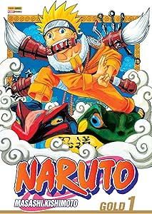

Sinopse
Sinopse: Naruto Uzumaki é um menino que teve um demônio preso dentro dele quando era bebê para evitar que o demônio destruísse sua aldeia. Ele cresceu em um ambiente onde todos tinham medo dele, pois quase todas as famílias tinham a lembrança de alguém morto pelo diabo. Sendo evitado e ignorado, tudo o que ele realmente deseja é ser amado e reconhecido por quem ele é. Acompanhe a vida de Naruto, seu amor pela "fofa e gentil" Sakura e sua "amizade" com Sasuke... uma história aparentemente simples onde o herói acumula poder, derrota os bandidos e faz amigos pelo caminho, certo? Incorreta. Naruto tem ação e comédia sim, mas o tema central do mangá é a solidão e como cada personagem lida com ela. A leveza cômica de alguns capítulos contrasta com o peso e a atmosfera trágica de outros.
Informações
- Autor: Masashi Kishimoto
- Volumes: 72
- Status: Completo
- Gêneros: Ação, Comédia, Shounen